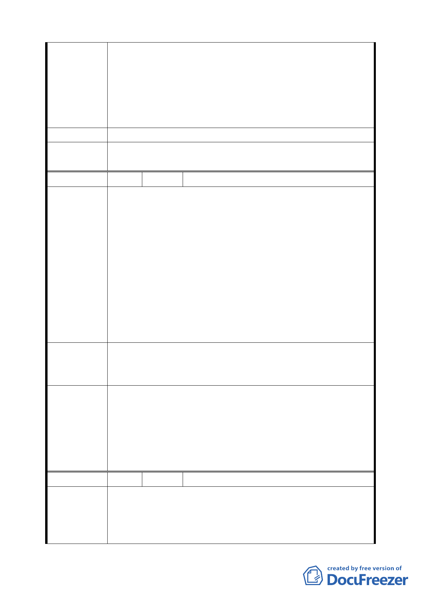

4 月中旬再次檢討，本案實施者及地主王文宏、魯鳳雲、謝
憲國、 王達立等 72 人提出是否能於細部計畫中修正建築
物高度之限制，使將來能發展成具地標性之建築物並產生
較大的空地比與地面層開放空間，由此提升本街廓之空間
美感與創造更美 麗的天際線，懇請貴局准予放寬建物高度
限制，實感德便。
建 議 辦 法 請准予放寬建物高度限制。
委員會決議
同意陳情民眾所提建議，取消公展計畫中建物高度之管制，
回歸本市土地使用分區管制規則規定辦理。
編 號 18 陳情人 張高祥
1.民有土地坐落於南港區經貿段 81、81-4 地號及 62-2 地號，
分屬 R12 及 R15 街廓，依 96 年 11 月 15 日府都規字第
09633652200 號公告公開展覽之「修訂臺北市南港經貿園區
特定專用區細部計畫通盤檢討案」，計畫書載明「…為促進
住宅區更新與開發、以及協助解決舊社區停車問題，R1、
陳 情 理 由 R13、R14、R16、R17 街廓，得比照『台北市建築物增設室
內公共停車空間鼓勵要點』之規定辦理」。
2.民所有土地鄰近 R13 及 R14 街廓，基地條件應相同，且展
資館周邊未來停車位需求量大，民有該筆基地亦可提供公
眾停車使用，卻無法比照相關規定辦理，實不合理，另有
關建築物高度不得超過 40 米限制，有礙都市景觀之活潑性。
1.將 R12 及 R15 街廓納入適用「台北市建築物增設室內公共
建 議 辦 法 停車空間鼓勵要點」範圍，以示公允。
2.建議放寬高度限制，以利都市景觀天際線之發展
1.同意發展局所提「未來交通運輸將以大眾運輸為主，且週
邊商業區之法定停車已要求須依本市土地使用分區管制規
委員會決議
則之 1.8 倍留設，可滿足商業區及會展衍生停車之需求，故
本街廓並無須增設停車空間之必要」，維持原公展計畫。
2.同意陳情民眾所提建議，取消公展計畫中建物高度之管
制，回歸本市土地使用分區管制規則規定辦理。
編 號 19 陳情人 三重里江里長輝吉等 97 人
1.基於本計畫範圍內建築物大多老舊，巷道曲折狹小，防災
陳情理由
機能嚴重不足，現有環境亟待更新。
2.鑑於南港軟體一、二、三期及東北側之南港展覽館，展覽
期間以目前台肥 C2、C3 商業區暫替代停車約 2000 位以及
34